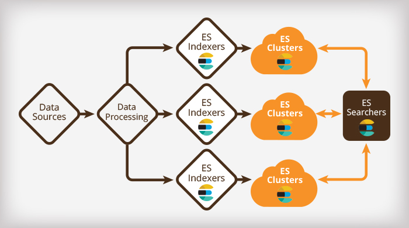

## ELK #### Elasticsearch, Logstash & Kibana Created by [Arnošt Havelka](http://cz.linkedin.com/in/arnosthavelka/)
## Agenda 1. The Concept 1. Elasticsearch 1. Data Collectors 1. Console 1. Live Demo 1. ZAM solution <p><small>See: <a href="https://www.elastic.co/">elastic.co</a></small></p>
## 1. The Concept 1. Overview 1. Architecture 1. Big Data Landscape 1. ELK products
## 1.1 Overview ELK stands for: 1. **Elastisearch** - Full-test search engine - NoSQL database 1. **Logstash** - Data collector (filtering, modifications, etc.) 1. **Kibana** - - Web console (visualization, data analysis, etc.)
1.2 Architecture
1.3 Big Data Landscape
## 1.4 ELK products [1/2] 1. **Elastisearch** - a distributed, RESTful search and analytics engine capable of solving a growing number of use cases. 1. **Kibana** - lets you visualize your Elasticsearch data and navigate the Elastic Stack 1. **Logstash** - is server-side data processing pipeline that ingests data from a multitude of sources simultaneously, transforms it, and then sends it to your favorite “stash.”.
## 1.4 ELK products [2/2] 1. **Beats** - is the platform for single-purpose data shippers. The Beats family consists of Filebeat, Metricbeat, Packetbeat, Winlogbeat, Heartbeat. 1. **X-Pack** - the additional components (security, alerting, monitoring, reporting, grapg, machine learning). 1. **Cloud** - the hosted Elasticsearch & Kibana on AWS and GCP.
## 2. Elasticsearch ### [Data Reservoir] 1. Overview 1. Architecture 1. Key components (nodes, shards, indices etc.) 1. Search example 1. Cluster & Scaling <p><small>See: <a href="https://www.elastic.co/products/elasticsearch">Elasticsearch product page</a></small></p>
## 2.1 Overview 1. Search and analytics engine based on **Lucine** engine 1. Serves as NoSQL database 1. Uses standard RESTful APIs and JSON (including management & batch processing) 1. Clients are available in many languages such as Java, Python, .NET, and Groovy (and more by contributors)
2.2 Architecture

## 2.3 Key components 1. **Node** - a single server that stores the data and participates in indexing and search capabilities. 1. **Index** - a collection of documents that have somewhat similar characteristics. 1. **Type** - a logical category/partition of your index. 1. **Document** - a basic unit of information that can be indexed. 1. **Shards & Replicas** - the basic element to store data. The index is split into multiple pieces called shards. <p><small>See: <a href="https://www.elastic.co/guide/en/elasticsearch/reference/current/_basic_concepts.html">Basic Concept</a></small></p>
## 2.4 Search Example ``` curl -H "Content-Type: application/json" -XGET 'http://localhost:9200/social-*/_search' -d '{ "query": { "match": { "message": "myProduct" } }, "aggregations": { "top_10_states": { "terms": { "field": "state", "size": 10 } } } }' ```
2.5 Cluster & Scaling [1/3]
2.5 Cluster & Scaling [2/3]
2.5 Cluster & Scaling [3/3]
## 3. Data Collectors 1. Types 1. Logstash - Inputs - Filters - Outputs 1. Filebeat
## 4. Live demo <p><a href="http://demo.elastic.co/app/kibana">http://demo.elastic.co/app/kibana</a></p>
## 5. ZAM Solution
THE END
Thank you!